[NY] Fill in some missing Current Hospitalizations & Current ICU from dash that were not supplied in emails
Issue number 569
muamichali opened this issue on July 2, 2020 at 6:00 pm
Hello,
I build and update a coronavirus tracker for Crain’s New York Business. The COVID Tracking Project is a great source for us, but I wanted to point out a few apparent errors I believe I’ve spotted in the New York data.
Metric: Current Hospitalizations In the hospitalizations data, the COVID Tracking Project is reporting some numbers that don’t match up with the figures the state is publishing in its own dashboard. These could be typos or results of the state’s revisions to hospitalization figures in the days that followed. Here are the updated numbers I’m using in my own tracker, which subtracts a day from the Tracking Project dates so it matches state sources: Date,Revised hospitalizations “2020-04-14”,18335 “2020-04-16”,17316 “2020-04-20”,16135 “2020-04-27”,12646 “2020-05-04”,9600 “2020-05-22”,4642
Metric: Current ICU I should also note that the New York dashboard contains daily ICU numbers. Those could be used to fill in the gap in the COVID Tracking Project’s ICU data (spanning from 4/27 through 5/6) and to update existing numbers. For instance, the current figures from the Tracking Project have 5,016 ICU admissions daily between 4/18 and 4/26, whereas the actual numbers reported by the state continuously decreased.
Comments
I pulled the data for the ICU backfill, will finish later tonight
Here’s what we had for NY ICU until now: 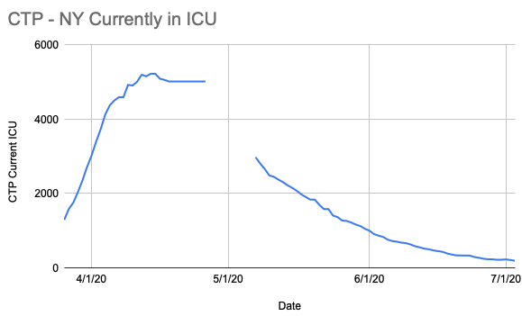
Here’s the official numbers I pulled from the dashboard linked in the issue description: 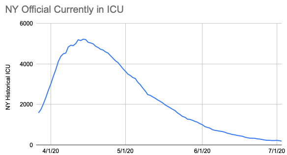
There were a few days before and after the gap which got straightened out as part of this process. Spreadsheet with the analysis, the original states daily column, and the new one: https://docs.google.com/spreadsheets/d/1K4YnfdMCCI4QX40DgPnxKPdMw_QGM47vmYHT9RWFlDM/edit#gid=0
Also, for the ICU updates, as with the hospitalization updates, I didn’t “fix” the fact we are a day behind the official numbers (since we’d just immediately fall behind again)
Amazing, Matt, Thanks so much! The graphs here are really helpful too.
Everything matches up. Thanks so much for your work here.
Just adding my thanks!
On Sat, Jul 4, 2020 at 6:48 PM Gerald Schifman notifications@github.com wrote:
Everything matches up. Thanks so much for your work here.
— You are receiving this because you are subscribed to this thread. Reply to this email directly, view it on GitHub https://github.com/COVID19Tracking/issues/issues/569#issuecomment-653831452, or unsubscribe https://github.com/notifications/unsubscribe-auth/ACS7NYNCS32HOUD234YNV73RZ7LWZANCNFSM4OPJXJYA .
– Alexis Madrigal Staff Writer | The Atlantic Co-Founder | The Atlantic’s COVID Tracking Project, covidtracking.com m. 415 602 4953
I confirmed the provided numbers matched the NY dashboard and then made six patches for current hospitalization:
Before: 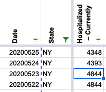
After: 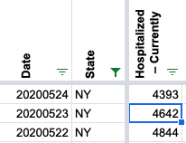
Before: 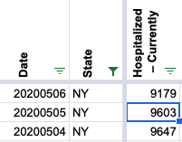
After: 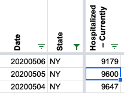
Before: 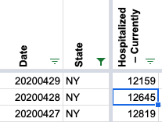
After: 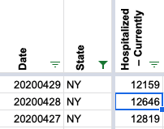
Before: 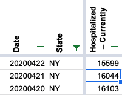
After: 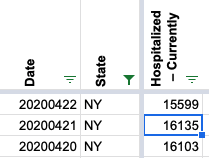
Before: 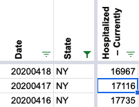
After: 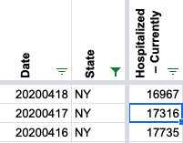
Before: 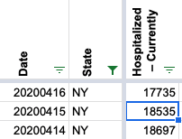
After: 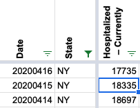
Note I didn’t change the fact we are a day behind, just corrected the values at the day-later offset from the official data.